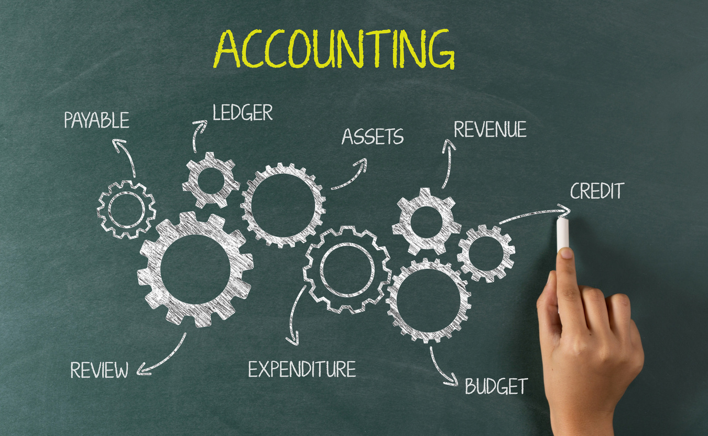
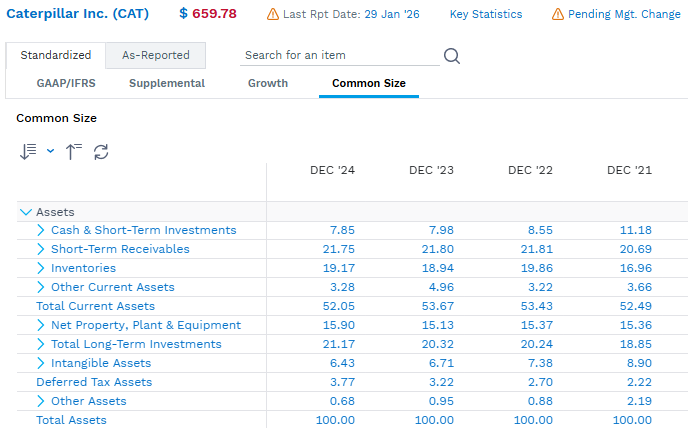
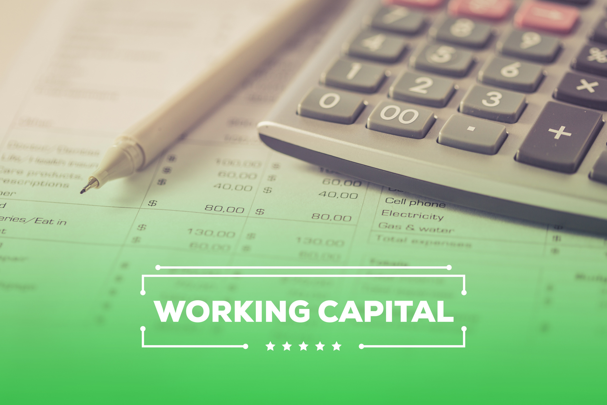
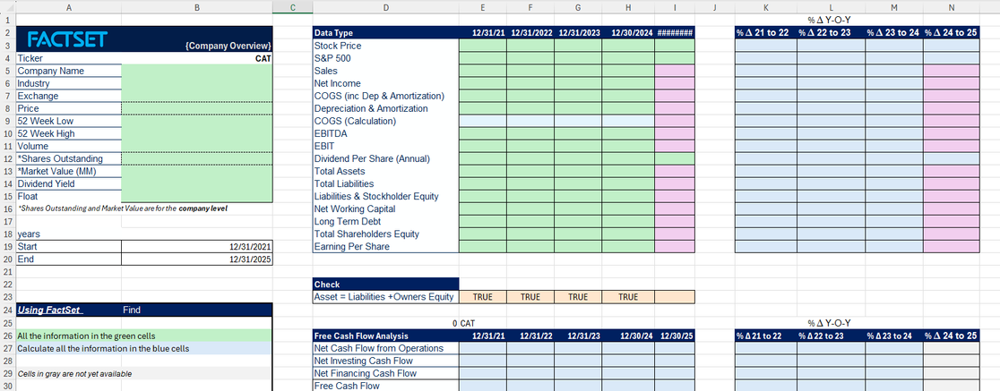

Balance sheet
What does the firm own, and what does it owe, at one point in time?
Assets = Liabilities + Equity
BUS311 · Corporate Finance
How financial statements become cash-flow evidence for valuation and decisions
Professor Bethany Evitts · Endicott College · Gerrish School of Business
The management job
The evidence base
What does the firm own, and what does it owe, at one point in time?
Assets = Liabilities + Equity
How much profit did the firm generate over a period?
Revenue − Expenses = Income
Where did cash come from, and where did it go?
Operating + Investing + Financing
Common-size statements turn dollars into percentages so firms of different sizes can be compared.
Statement 1
It reports the resources the company controls, the claims creditors hold, and the residual interest belonging to shareholders.
Finance uses this statement to assess liquidity, capital structure, and the resources available to generate future returns.
Comparability
Generally Accepted Accounting Principles govern how U.S. companies prepare, present, and report financial information.
Similar transactions are classified and measured using shared conventions.
Analysts can make a more credible apples-to-apples comparison.

Standardize before comparing
Shows how the firm allocates resources and finances those resources.
Shows margins and the cost structure behind each revenue dollar.
Shows which activities create or consume cash.
FactSet walk-through
The percentage answers a cleaner question: “How much of the asset base sits in this account?”
Use the same fiscal period, accounting basis, and currency before interpreting differences.

The balance-sheet architecture
The balancing relationship
Personal analogy
Home value
Mortgage
The homeowner’s equity is the residual claim—not the full value of the house.
Classification
Expected to become cash, be sold, or be used within one year.
Cash · Receivables · Inventory
Support operations and growth beyond the next year.
Property · Equipment · Intangibles
Must be settled within one year.
Payables · Accrued expenses · Short-term debt
Come due after one year.
Bonds · Bank loans · Lease obligations
Short-term financial health
Positive NWC can support day-to-day operations—but too much may signal cash tied up in inventory or receivables.
Funding the firm
Interest and principal create contractual claims. Debt can be cheaper, but it increases financial risk.
No required repayment, but new owners share control and future upside.
Most firms use both. The decision is about cost, flexibility, control, and risk.
Statement 2
Revenue shows what the company earned. Expenses show what it consumed to earn that revenue. The residual is profit.
Unlike the balance sheet, the income statement covers a period: a month, quarter, or year.
The simplest version
Translate totals into ownership units
How much profit is attributable to each common share?
How much cash distribution is paid for each share?
A profit is not fully available to investors
Finance distinguishes the rate paid on total income from the rate applied to the next dollar earned.
Tax vocabulary
The statutory rate applied to an additional dollar of taxable income.
Useful for forecasting how an incremental decision changes taxes.
Total tax expense divided by pretax income.
Useful for understanding the overall tax burden reported by the company.
The denominator matters
For a new project, use the marginal rate because the project creates incremental taxable income.
Accounting expense, cash-flow adjustment
They reduce accounting income without using cash in the current period.
Match the expense to the asset
Spreads the cost of physical assets such as equipment, buildings, and vehicles across their useful lives.
Spreads the cost of patents, trademarks, and other finite-lived intangibles across their useful lives.
Statement 3
Accrual accounting explains performance. Cash flow explains liquidity and the funds available to creditors and shareholders.
Case: the bakery
The finance lens
“Profit is an opinion. Cash is a fact.”
Net income contains estimates and accruals. Cash flow focuses on money the firm can spend, reinvest, or return.
The personal analogy
Cash flow from assets
The firm has already covered operations, taxes, and the reinvestment required to sustain the business.
Component 1
D&A is added back because it reduced accounting income without using cash in the current period.
| 2024 U.S. Corporation | $ |
|---|---|
| EBIT | 694 |
| Add: Depreciation | 65 |
| Less: Taxes | (131) |
| Operating cash flow | 628 |
From accounting to cash
Ross OCF comes before the NWC deduction. Statement CFO starts with net income and includes the working-capital adjustment.
Components 2 and 3
Cash invested in property, plant, equipment, and other long-lived operating assets.
Cash tied up—or released—through inventory, receivables, payables, and other current accounts.
You have to spend money to make money
Net capital spending
Depreciation is added because the ending balance is shown after accounting depreciation.
| 2024 U.S. Corporation | $ |
|---|---|
| Ending fixed assets | 1,709 |
| Less: Beginning fixed assets | (1,644) |
| Add: Depreciation | 65 |
| Net capital spending | 130 |
Reinvestment drags
New equipment, facilities, and technology consume cash now but may expand future operating cash flow.
More sales can require more inventory and receivables before the related cash is collected.
Negative free cash flow is a signal to investigate—not an automatic verdict.
Working capital over time

Increase in NWC: cash outflow.
Decrease in NWC: cash inflow.
Calculation
A positive change reduces free cash flow because more cash is tied up in current operating assets.
| 2024 U.S. Corporation | $ |
|---|---|
| Ending NWC | 1,075 |
| Less: Beginning NWC | (684) |
| Change in NWC | 391 |
The master formula
Put all three components together
| 2024 U.S. Corporation | $ |
|---|---|
| Operating cash flow | 628 |
| Less: Net capital spending | (130) |
| Less: Change in NWC | (391) |
| Cash flow from assets | 107 |
Cash remained for creditors and stockholders after operations and reinvestment.
Follow the cash
Applied finance warm-up
Read the business behind the statements, then explain what changed.
In class or homework
Open the separate CAT FactSet activity workbook.
Use FactSet to fill the requested financial, cash-flow, and stock data in the green cells.
Calculate percentage changes in the blue cells, then submit the completed file in Canvas.
Separate application: record year-end periods and units; submit the completed CAT file and interpretations as assigned.

Capital allocation
The answer should depend on value creation—not simply on whether cash is available.
The distributable surplus
Debt holders
Issuing new debt brings cash into the firm, so it reduces the net cash paid to creditors.
| 2024 U.S. Corporation | $ |
|---|---|
| Interest paid | 70 |
| Less: Net new borrowing | (46) |
| Cash flow to creditors | 24 |
Owners
Selling new shares brings cash into the firm, so it offsets the cash paid out to existing owners.
| 2024 U.S. Corporation | $ |
|---|---|
| Dividends paid | 123 |
| Less: Net new equity | (40) |
| Cash flow to stockholders | 83 |
The heartbeat of the firm
Profit is an opinion. Cash is a fact. Free cash flow is the heartbeat of the firm.
The bridge
Worked example · $ thousands
| Row | A · Category | B · Value | Excel formula in B |
|---|---|---|---|
| 1 | EBIT · operating profit | 100 | Input |
| 2 | Tax rate | 25% | Input |
| 3 | Depreciation & amortization | 10 | Input |
| 4 | CapEx · equipment purchased | 25 | Input |
| 5 | Increase in operating NWC | 5 | Input |
| 6 | Interest | 20 | Input |
| 7 | Net borrowing | 0 | Input |
First watch the small example. Then solve the original FCFF / FCFE activity with your partner.
Worked example · $ thousands
The expense reduced profit. No cash leaves when this expense is recorded.
Buying equipment uses cash today. Its full cost is not this year’s expense.
Inventory rises from $15K to $20K and is paid in cash. Other operating balances stay fixed.
Predict with a partner · 30 seconds: which event uses cash without immediately reducing profit?
Worked example · $ thousands
| Row | A · Category | B · Value | Excel formula in B |
|---|---|---|---|
| 8 | Actual taxes | 20 | =(B1-B6)*B2 |
| 9 | Net income | 60 | =B1-B6-B8 |
| 10 | Statement CFO | 65 | =B9+B3-B5 |
CFO already reflects interest and working capital. It is before the $25K equipment purchase.
Worked example · $ thousands
| Row | A · Category | B · Value | Excel formula in B |
|---|---|---|---|
| 11 | NOPAT · operating profit after tax | 75 | =B1*(1-B2) |
| 12 | FCFF · debt and equity | 55 | =B11+B3-B4-B5 |
Tax EBIT as if there were no interest deduction. Then fund equipment and working capital.
Worked example · $ thousands
| Row | A · Category | B · Value | Excel formula in B |
|---|---|---|---|
| 13 | After-tax interest | 15 | =B6*(1-B2) |
| 14 | FCFE · equity capacity | 40 | =B12-B13+B7 |
The $20K interest payment saves $5K in taxes. Its net cash cost is $15K.
Worked example · $ thousands
Suppose new debt is $8K and principal repaid is $3K. Keep this year’s interest and operations fixed.
With a partner, calculate net borrowing and the revised FCFE. Does FCFF change?
Net borrowing = debt issued − principal repaid
The great bifurcation
Live you try it
Work in pairs for 2 minutes. Write both formulas, calculate FCFF and FCFE, and identify who can claim each flow.
Solution in Excel
| Row | A · Category | B · Value | Formula entered in column B |
|---|---|---|---|
| 1 | EBIT | 20.00 | Provided input |
| 2 | Tax rate | 25% | Provided input |
| 3 | Depreciation & amortization | 5.00 | Provided input |
| 4 | Capital expenditures | 6.00 | Provided input |
| 5 | Increase in operating NWC | 2.00 | Provided input |
| 6 | Interest expense | 2.00 | Provided input |
| 7 | Net borrowing | 0.00 | Provided input |
| 8 | NOPAT | 15.00 | =B1*(1-B2) |
| 9 | FCFF · firm cash flow | 12.00 | =B8+B3-B4-B5 |
| 10 | After-tax interest | 1.50 | =B6*(1-B2) |
| 11 | FCFE · equity cash flow | 10.50 | =B9-B10+B7 |
FCFF covers debt and equity. Subtract after-tax interest and add net borrowing to reach FCFE.
After practice · connect the methods
How did profit turn into operating cash?
Brealey starts with net income, then adjusts noncash items and working capital.
What cash remains for investors after investment, using actual taxes?
Brealey adds full interest to CFO, then deducts investment.
Which investor claim are we measuring?
FCFF removes the interest tax benefit. FCFE includes debt effects.
The earlier Ross example uses another starting point: EBIT + D&A − actual taxes.
Return to the $ thousands example
Actual taxes: (100 − 20) × 25% = 20
Taxes on EBIT: 100 × 25% = 25
60 − 55 = 5 = interest × tax rate. Same operations; a different tax convention.
Check understanding · then apply
| Row | A · Category | B · Value | Excel formula in B |
|---|---|---|---|
| 12 | FCFF from EBIT | 55 | =B1*(1-B2)+B3-B4-B5 |
| 15 | FCFF from CFO | 55 | =B10+B13-B4 |
| 16 | FCFE check from CFO | 40 | =B10-B4+B7 |
Now apply the same logic to Coastal. CFO already includes Δ operating NWC.
Partner activity · 20 minutes
Complete yellow cells on Cash Flow. Routine links are supplied; check each section as you finish.
Why does working capital use cash? Why does borrowing affect FCFE?
Deliverable: completed Cash Flow tab and a working-capital explanation.
From measurement to management
Cash availability tells us what is feasible. We still need to decide which use creates the most value.
Capital allocation choices
Partner decision · 10 minutes
FCFE is a period flow. Account for dividends and repurchases already made.
Ending cash includes beginning cash and prior distributions. Preserve the required reserve.
Draft Decision Memo: propose an amount and cite three numbers. Finalize after the experiment and debrief.
Predict and test · 5 minutes
Predict the effect on profit, CFO, FCFF, FCFE and cash.
Record the results. Explain whether the inventory supports growth or signals slow sales.
Record your explanation in Decision Memo, then restore inventory to 170.
Interpretation and nuance
For inventory: investigate demand, cash conversion and funding.
Discuss and revise · 3 minutes
What happened to profit and cash?
Does the inventory support growth or signal slow sales?
Which constraint sets the payout ceiling?
Why might management pay less than the maximum?
Restore inventory to 170. Finalize your amount, three supporting numbers, and a monitoring trigger.
From a feasible choice to a valuable choice
The value of an asset is the present value of its future cash flows.
Forecast the cash, consider when it arrives, and use a rate that matches its risk.
Capital budgeting
The project is expected to create value.
The project is expected to destroy value.
Match cash flow to discount rate
Produces enterprise value.
Produces equity value.
Now complete Decision Memo’s discount-rate responses: FCFF uses WACC; FCFE uses the cost of equity.
Synthesis and exit
Accounting performance
Adjust for noncash items and reinvestment
Respect existing payouts and the reserve
Match future cash flows to the investor claim
A feasible payout is not automatically the best decision.
Coastal reports positive profit. What two additional facts would you require before recommending a shareholder payout?
Reference
Optional reference: use only when a question needs a reminder
Appendix · Decision 1
Managers identify opportunities whose future cash flows are worth more than the resources required to acquire them.
Typical focus: property, plant, equipment, technology, acquisitions, and new products.
Appendix · Decision 2
Interest and repayment commitments can lower flexibility but may reduce the cost of capital.
No promised repayment, but investors require compensation for greater risk.
The objective is not “least debt” or “most debt.” It is a financing mix that supports value and resilience.
Appendix · Decision 3
Set credit terms and collect cash without sacrificing healthy sales.
Keep enough stock to operate without trapping too much cash.
Use supplier credit responsibly while protecting relationships and liquidity.
Appendix · Investing cash flow
Capital spending appears in cash flow from investing and includes purchases of long-lived assets.
Large outflows may reflect expansion, new technology, or research and development—not necessarily distress.
Maintenance or growth?
Expected return and timing?
Funding capacity?
Appendix · Tangible assets
Wear, use, and obsolescence reduce a tangible asset’s accounting value over its useful life.
The original asset purchase was a cash outflow when the asset was acquired.
Appendix · Intangible assets
Rights to an invention or process.
Protected names, symbols, and marks.
Value consumed over a measurable life.
Optional reference · noncash compensation
Stock-based compensation is noncash when recognized, so it is generally added back in the indirect CFO reconciliation.
Share issuance can dilute existing owners. Consider dilution and related cash repurchases when evaluating equity cash flows.
An accounting add-back does not make compensation economically free.